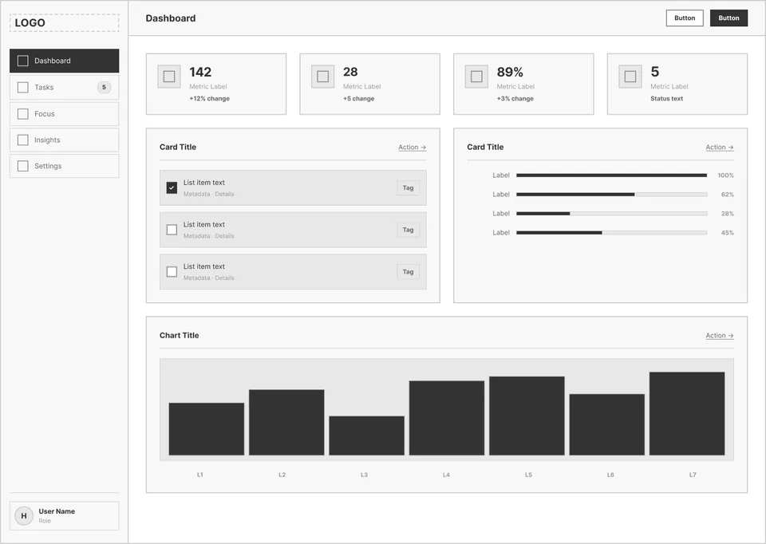
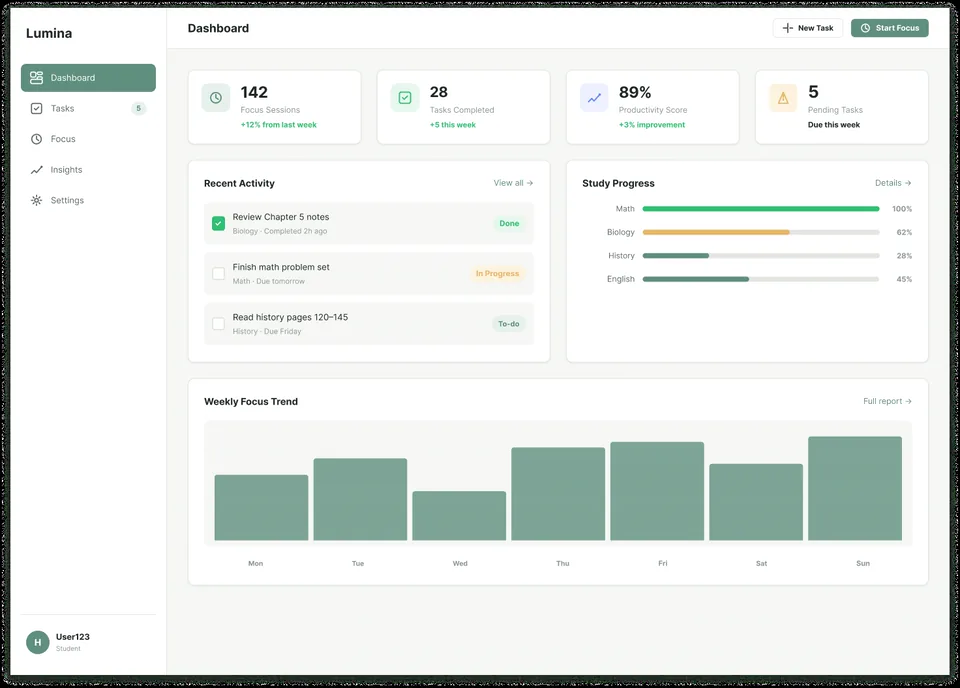
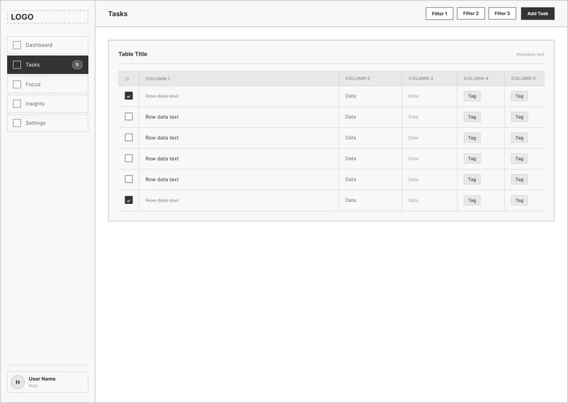
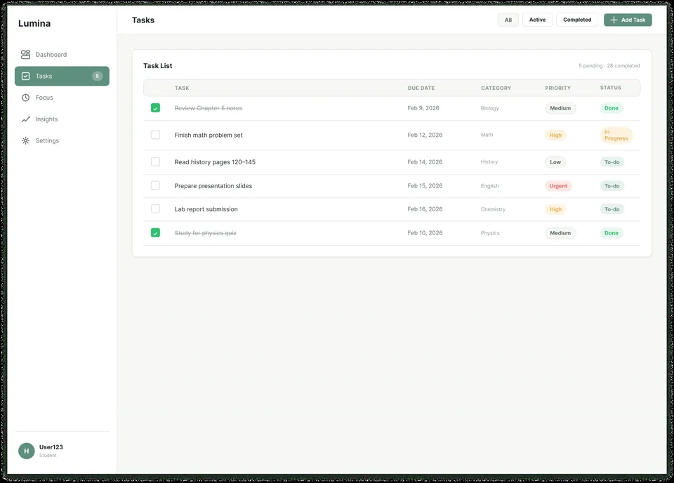
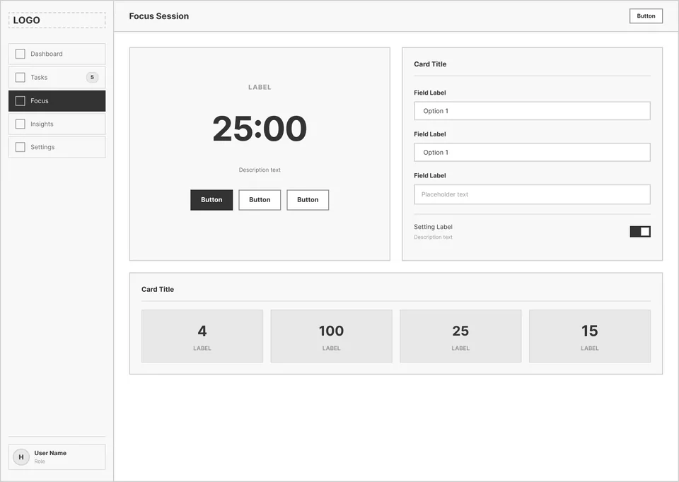
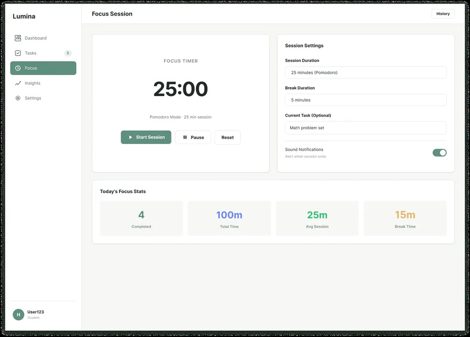
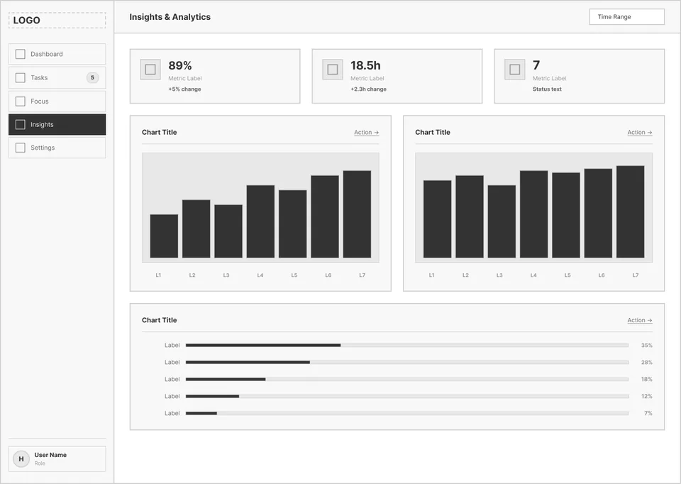
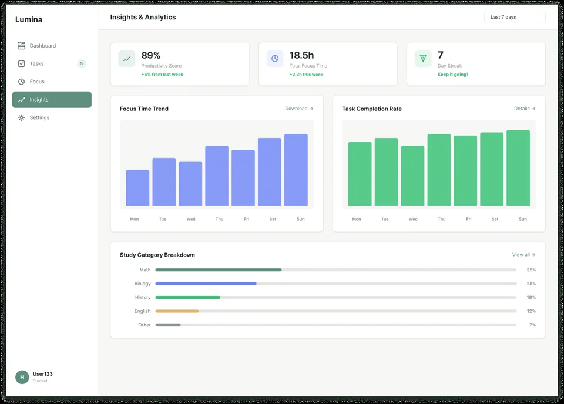
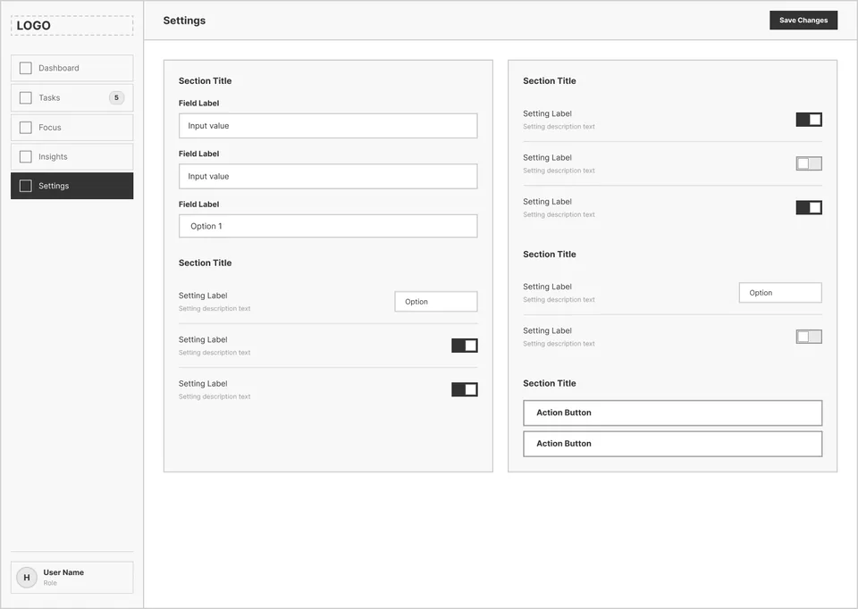
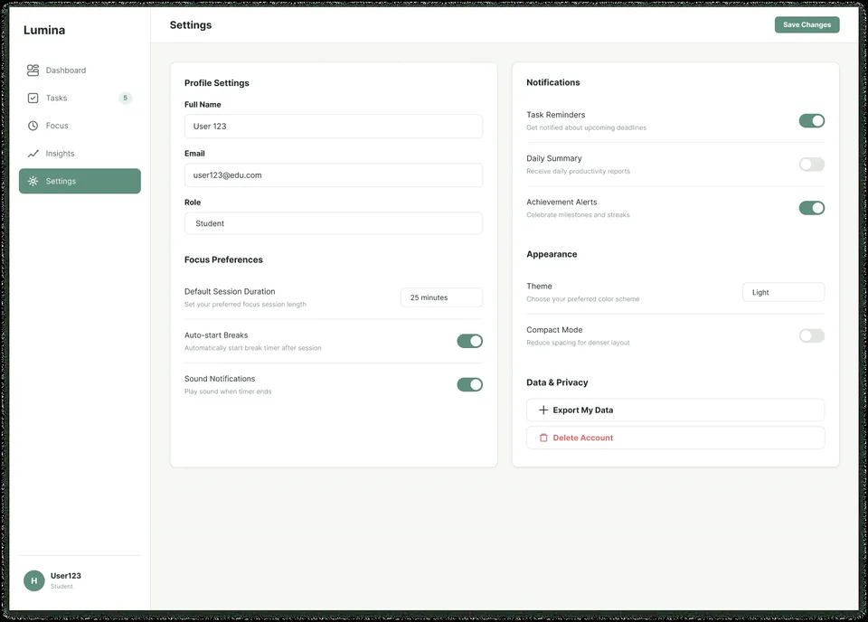

Lumina Analytics — A Study & Focus Dashboard
Designed in Figma, Built in React
A dashboard for students to plan study tasks, run focus sessions and see their week at a glance. I designed it in Figma, then built a working front end in React, TypeScript and Chart.js that runs on sample data.
Study apps tend to split the work across a to-do list, a timer and a habit tracker, so answering "what should I do next, and am I keeping up?" takes several screens.
Designed and built one dashboard with five views (Dashboard, Tasks, Focus, Insights, Settings): key numbers and per-subject progress at a glance, a task list, a 25-minute focus timer, and weekly charts on demand.

# Lumina live build: a client-only React app on built-in sample data (no backend, no live feed) [VIEWS] Dashboard · Tasks · Focus · Insights · Settings (one React state switch) [DATA] Sample data in the components; tasks kept in React state [CHARTS] Chart.js via react-chartjs-2: two bar charts ├─ Focus hours and tasks completed └─ 7-day view: 7 daily bars · 30-day view: 4 weekly bars [TIMER] 25-minute focus timer (setInterval, 1 s tick) [STYLE] Tailwind CSS v4 colour tokens (@theme) [DEPLOY] Vite + React 19 + TypeScript build, static on Netlify
One Place to Plan, Focus & Review
Students keep tasks in one app, time their study sessions in another, and rarely see progress across subjects in one place. Lumina is my attempt to put those on one screen.
Lumina combines study tasks, focus sessions and per-subject progress in one dashboard, designed in Figma and then built as a React app.
Three-Tier Modular Hierarchy
To keep the screen calm, Lumina organises the work into three levels:
1. The Glance Strip
Four numbers at the top of the dashboard: focus sessions, tasks completed, a productivity score and pending tasks.
2. Tasks & Focus
A task list where you add a task (Enter submits) and tick it done, plus a 25-minute focus timer.
3. Insights
Bar charts of focus hours and tasks completed: seven daily bars for the last 7 days, or four weekly bars for the last 30.
From Wireframe Structure to Dense Visual Reality
Compare the initial structural wireframes against the deployed high-density interfaces:








A Small, Consistent Theme
The live build keeps its colours in one Tailwind CSS @theme block: four obsidian greys and a border grey, three emerald shades and a glow. The body text is set in Inter. The Figma design uses a light palette; the React build is dark only.


Built as a Working Web App
Beyond the Figma file, I built Lumina as a working front end in React and TypeScript and deployed it to Netlify. It runs in the browser on built-in sample data: there is no backend or account, and tasks you add reset when the page reloads.